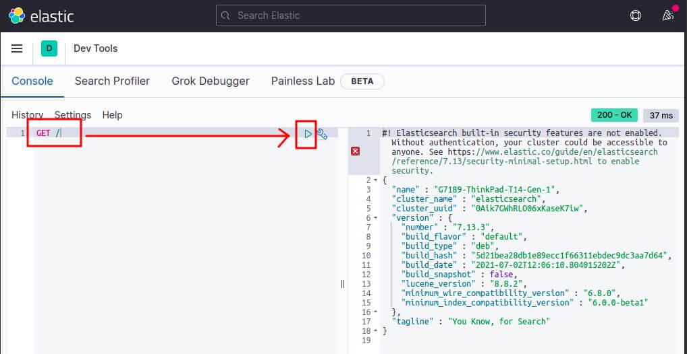
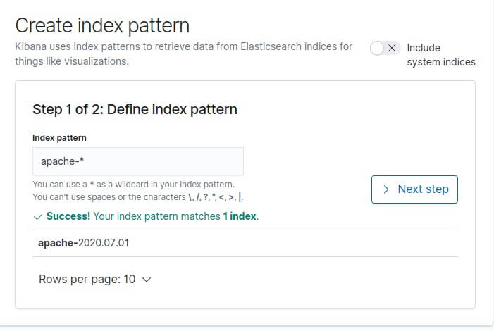
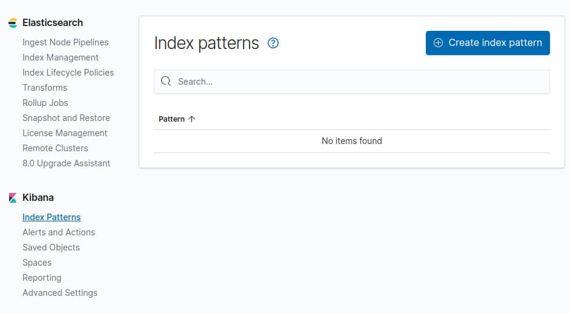

0. Prérequis et Configuration de l'Environnement
0.1. Pourquoi une Machine Virtuelle ?
Problème : Chaque étudiant a un environnement différent (Windows 10/11, macOS, Ubuntu, Fedora...). Les instructions d'installation varient, les versions de Java diffèrent, les permissions sont différentes.
Solution : Nous allons tous utiliser exactement la même machine virtuelle Linux pour garantir que le cours se déroule sans accroc.
0.2. Configuration Requise de la Machine Hôte
- RAM : 8 Go minimum (16 Go recommandé)
- Processeur : Support de la virtualisation (Intel VT-x ou AMD-V)
- Disque : 50 Go d'espace libre
Vérification (Windows) : Gestionnaire des tâches -> "Performance" -> "Processeur". "Virtualisation" doit être "Activée". (Sinon, activez-la dans le BIOS/UEFI).
0.3. Installation de VirtualBox
Téléchargez et installez VirtualBox depuis le site officiel. Redémarrez si demandé.
Planning Recommandé (Auto-formation)
- Semaine 1 : Les Fondations
- Objectif : Avoir une stack fonctionnelle.
- Chapitres : 0 à 4.
- Livrable : La stack est installée, le checkpoint 4.3 est validé.
- Semaine 2 : L'Ingestion
- Objectif : Maîtriser l'ingestion de données (logs & métriques).
- Chapitres : 5 et 6.
- Livrable : Les logs Apache (Logstash) et les métriques (Metricbeat) arrivent dans Kibana.
- Semaine 3 : La Visualisation et le Projet
- Objectif : Analyser et présenter les données.
- Chapitres : 7, 8 et 9.
- Livrable : Le projet Open Data (Chap. 8) est terminé et présenté.
0.4. Téléchargement des Outils Officiels
Ressources Clés (Téléchargement)
- VirtualBox : virtualbox.org/wiki/Downloads
- Ubuntu Server 22.04 LTS : ubuntu.com/download/server (Prenez l'option "Manual server installation")
0.5. Création de la Machine Virtuelle ("From Scratch")
- Ouvrez VirtualBox et cliquez sur "Nouvelle".
- Nom : `ElasticStack-VM`
- Image ISO : Sélectionnez l'ISO d'Ubuntu Server 22.04.
- Cochez "Installer en mode 'unattended'" (Installation non assistée).
- Utilisateur : `elastic-student` | Mot de passe : `Formation2025!`
- Configuration Matérielle : Allouez au moins **4 Go (4096 Mo) de RAM** et **2 cœurs de CPU**.
- Disque Dur : Créez un disque de **40 Go** (taille dynamique).
- Suivez l'assistant. L'installation d'Ubuntu va démarrer (cela peut prendre 10-15 minutes).
0.6. Configuration Réseau de la VM
Accès par Pont (Recommandé)
- Sélectionnez votre VM (éteinte) -> "Configuration" -> "Réseau".
- "Mode d'accès réseau" : Accès par pont (Bridged Adapter).
- "Nom" : Sélectionnez votre carte réseau principale (Wi-Fi ou Ethernet).
0.7. Premier Démarrage et Configuration
Connectez-vous à votre VM (`elastic-student` / `Formation2025!`).
Mettez à jour le système et installez Java 11 (pré-requis Elastic) :
sudo apt update && sudo apt upgrade -y
sudo apt install openjdk-11-jdk -y
Vérifiez l'installation de Java :
java -version
# Doit afficher : openjdk version "11.0.x"
0.8. Configuration SSH (Accès Confort)
Installez SSH sur la VM pour pouvoir copier-coller les commandes depuis votre machine hôte.
# Dans la VM
sudo apt install openssh-server -y
sudo systemctl enable ssh
ip addr show # Notez l'adresse IP (ex: 192.168.1.150)
Depuis votre machine **hôte** (PowerShell, Terminal, etc.) :
ssh elastic-student@[IP_DE_LA_VM]
0.9. Snapshot de Sauvegarde (Crucial)
TRÈS IMPORTANT :
- Éteignez votre VM.
- Dans VirtualBox, sélectionnez votre VM -> "Snapshots" -> "Prendre".
- Nom : "VM Propre - Avant Cours"
Si vous cassez quelque chose, vous pourrez revenir à cet état propre.
0.10. Validation de l'Environnement
✅ Checkpoint Avant de Commencer
Exécutez ces commandes manuelles pour valider que votre environnement est prêt :
java -version # Doit afficher Java 11
free -h # Doit afficher > 3.5Go de RAM
df -h / # Doit afficher > 30Go de disque
ping -c 1 google.com # Doit répondre
1. Introduction à la Suite Elastic (ELK)
Bienvenue dans ce cours sur la stack Elastic 8.x ! Nous allons transformer des données brutes en informations précieuses. Ce guide interactif vous accompagnera de la théorie fondamentale à la création de dashboards complexes.
Les 3 Composants Historiques (ELK)
Elasticsearch
Le **cœur** de la stack. Un moteur de recherche et d'analyse distribué. Il stocke, indexe et rend les données consultables à une vitesse fulgurante.
Logstash
Le **pipeline** de traitement. Un outil côté serveur qui ingère les données de multiples sources, les transforme (parse, enrichit) et les envoie vers Elasticsearch.
Kibana
L'**interface** de visualisation. L'outil web qui vous permet d'explorer, de visualiser (graphiques, cartes) et de créer des dashboards avec vos données.
... Et l'Évolution : Les Beats
Depuis, la famille s'est agrandie avec les **Beats** : des agents légers conçus pour collecter des types de données spécifiques (logs, métriques, etc.) directement depuis vos serveurs.
Histoire et Évolution
- 2010 : Shay Banon crée Elasticsearch.
- 2012 : Jordan Sissel crée Logstash.
- 2013 : Rashid Khan crée Kibana.
- 2014 : Elastic (l'entreprise) est fondée.
- 2015 : Introduction des Beats.
- 2021 : Changement de licence (Elastic License v2 & SSPL).
1.5. Comprendre les Logs (Le "Pourquoi")
Avant de plonger dans la technique, comprenons pourquoi les logs sont l'une des ressources les plus précieuses d'une entreprise.
Qu'est-ce qu'un Log ?
Définition simple : Un log est un "journal" automatique d'événements qu'écrit un programme ou un système.
"2025-11-03 09:15:32 : Page '/index.html' visitée depuis IP 192.168.1.100"
"2025-11-03 10:00:45 : ERREUR : Fichier 'config.php' introuvable"Pourquoi les Logs sont-ils Cruciaux ?
1. Débogage (Debug)
Quand un site plante, le log dit pourquoi.
[ERROR] Database connection failed: Timeout
2. Sécurité (SIEM)
Détecter les attaques en temps réel.
[WARN] Failed login 'admin' from IP 1.2.3.4 (3 attempts)
3. Performance (APM)
Révéler les goulots d'étranglement.
[INFO] Page '/produits' loaded in 5.2s (DB: 4.8s)
4. Business Intelligence
Donner des insights métier.
[INFO] "GET /produit/iphone-15" 200
Le Problème : L'Explosion des Logs
Sans outil, il est impossible de répondre à des questions simples : "Pourquoi le site était-il lent hier à 15h ?"
La Solution : Centralisation et Analyse
C'est exactement le rôle de la **Stack Elastic** :
- Collecter tous les logs dispersés (Beats/Logstash).
- Centraliser dans un moteur de recherche (Elasticsearch).
- Visualiser avec des graphiques (Kibana).
💡 Le Défi de l'Observabilité dans les Systèmes Distribués
L'évolution des architectures logicielles,
passant de systèmes monolithiques centralisés à des écosystèmes de microservices distribués,
a fondamentalement transformé les défis liés à la surveillance et à la maintenance des applications.
Dans une architecture monolithique,
les journaux d'événements (logs) étaient généralement stockés dans des fichiers sur un seul serveur.
L'analyse et le dépannage, bien que parfois fastidieux, se limitaient souvent à se connecter à ce serveur via SSH
et à utiliser des outils en ligne de commande comme grep pour rechercher des informations pertinentes.
Cette approche est devenue obsolète face à la complexité des environnements modernes.
Les systèmes distribués,
qui composent l'infrastructure de la plupart des entreprises technologiques aujourd'hui,
sont constitués de centaines, voire de milliers de services interconnectés,
souvent exécutés dans des conteneurs éphémères sur des plateformes cloud.
Dans un tel environnement, les logs sont générés de manière décentralisée sur une multitude de machines virtuelles et de conteneurs
qui peuvent être créés et détruits dynamiquement.
Tenter de suivre les logs en se connectant manuellement à chaque nœud est non seulement impraticable,
mais impossible.
Ce contexte a donné naissance au concept d’observabilité,
qui repose sur trois piliers fondamentaux :
les logs,
les métriques (metrics) et
les traces (traces).
La journalisation centralisée
est la pierre angulaire de cette approche,
car elle permet de collecter, d’agréger et d’analyser l’ensemble des logs générés par une infrastructure en un seul endroit,
offrant une vue unifiée indispensable pour le monitoring, le dépannage et l’analyse de sécurité.
La gestion des logs à grande échelle
a cessé d’être une simple tâche d’administration système
pour devenir un problème complexe d’ingénierie des données en temps réel.
Le défi n’est plus seulement de capturer du texte,
mais de gérer un flux continu de données semi-structurées à très haut volume et à haute vélocité.
Initialement, le problème était l’accès aux fichiers de logs.
Avec la distribution des systèmes, il est devenu un problème d’agrégation.
À l’échelle d’entreprises comme Netflix,
qui traitent des pétaoctets de données,
le défi se transforme en un problème de traitement de flux (stream processing).
Le volume de données est tel qu’il ne peut être géré par de simples outils de collecte ;
il nécessite un pipeline de données robuste
capable d’ingestion, de mise en mémoire tampon (buffering), de transformation et de routage en temps quasi réel.
Par conséquent, les outils et les principes du Big Data,
tels que Apache Kafka pour le buffering
et des bases de données distribuées comme Elasticsearch pour le stockage,
deviennent des composants essentiels et non plus optionnels.
💡 Le savais-tu ? L'origine d'Elasticsearch
Shay Banon, le créateur d'Elasticsearch, a commencé à le développer en 2010 non pas pour des logs, mais pour aider sa femme (cheffe cuisinière) à créer une application de recherche de recettes. La puissance du moteur de recherche s'est avérée parfaite pour... les logs !
2. Architecture Globale
Comprendre comment les données circulent est essentiel.
1. Architecture "Flexible" : Beats → Logstash → Elasticsearch
L'architecture la plus courante. Nécessaire pour parser des logs "custom" ou enrichir des données.
Focus Théorique : Quand se passer de Logstash ?
Vous pouvez envoyer les Beats directement à Elasticsearch si :
- Vous utilisez un **Module Beats** (ex: Nginx, MySQL) qui gère le parsing.
- Vos logs sont déjà en format JSON propre.
3. Elasticsearch - Fondamentaux
Plongeons dans le cœur du réacteur.
Terminologie : SQL vs Elasticsearch
| Monde SQL | Monde Elasticsearch |
|---|---|
| Table | Index |
| Ligne | Document (JSON) |
| Colonne | Champ (Field) |
| Schéma | Mapping |
Le Secret de la Vitesse : L'Index Inversé
Comment ES trouve-t-il un mot dans 1 milliard de documents en millisecondes ? Il utilise un index (comme à la fin d'un livre).
Documents :
Doc 1: "Le renard brun."
Doc 2: "Le renard saute."
Index Inversé (Simplifié) :
| Terme | Documents |
|---|---|
| "brun" | Doc 1 |
| "renard" | Doc 1, Doc 2 |
| "saute" | Doc 2 |
Concept Clé : Analyse (`text` vs `keyword`)
- `text` : Le champ est **analysé**. "Le renard brun" est découpé en `["le", "renard", "brun"]`. Permet de rechercher "renard". Utilisé pour les descriptions, le message des logs.
- `keyword` : Le champ **n'est pas analysé**. "Le renard brun" est stocké comme une seule valeur. Utilisé pour les codes HTTP (`response: 200`), les IPs, les statuts.
Les "Analyzers"
Comment fonctionne l'analyse d'un champ `text` ?
Un **Analyzer** est un mécanisme qui s'exécute *au moment de l'indexation* (écriture) pour transformer un texte en *tokens* (termes) qui seront placés dans l'index inversé.
Un Analyzer standard effectue 3 étapes :
- Character Filters : Nettoie le texte (ex: enlève le HTML).
- Tokenizer : Découpe la chaîne en tokens (ex: aux espaces).
- Token Filters : Transforme les tokens (ex: met tout en minuscule, enlève les "stop words" comme 'le', 'la', 'un').
Exemple (Analyzer `standard`) :
- **Texte d'entrée :** `"Le renard brun SAUTE."`
- **Tokens après `standard_tokenizer` :** `[Le, renard, brun, SAUTE]`
- **Tokens après `lowercase_filter` :** `[le, renard, brun, saute]`
- **Tokens après `stop_filter` (français) :** `[renard, brun, saute]`
- **Résultat dans l'index :** `renard`, `brun`, `saute`.
C'est grâce à cela qu'une recherche pour "renard" trouvera ce document.
Scalabilité : Shards & Replicas
- Shards (Fragments) : ES divise votre index en morceaux. Cela permet le **scaling horizontal**.
- Replicas (Répliques) : ES crée des copies de vos shards. Si un nœud tombe en panne, la réplique prend le relais. Cela garantit la **haute disponibilité**.
Exemple: Cluster à 3 Nœuds
Index `logs` (3 shards [P], 1 réplique [R]).
Nœud 1
Nœud 2
Nœud 3
Si le **Nœud 2 tombe en panne**, R1 (sur Nœud 1) est promu en P1. L'index reste 100% fonctionnel.
Pratique : L'API via les "Dev Tools"
La seule façon de parler à Elasticsearch est via son API REST (en JSON). Kibana fournit un outil "Dev Tools" pour le faire facilement.
Testez ces commandes de base :
# 1. Créer (ou mettre à jour) un document
POST /mon-premier-index/_doc/1
{
"user": "alex",
"message": "Ceci est mon premier document!"
}
# 2. Récupérer ce document
GET /mon-premier-index/_doc/1
# 3. Rechercher dans l'index (via Query DSL)
GET /mon-premier-index/_search
{
"query": {
"match": {
"message": "document"
}
}
}
4. Installation & Administration
Mettons en place notre environnement de travail (sur Debian/Ubuntu).
4.0. TP : Notre Premier Serveur (Apache)
Avant d'analyser des logs, nous avons besoin de quelque chose qui en produit ! Apache est un serveur web qui génère un log à chaque visite.
Étape 1 : Installation d'Apache
sudo apt update
sudo apt install apache2 -y
Étape 2 : Démarrage du Service
Un "service" est un programme qui tourne en arrière-plan. Nous démarrons Apache :
sudo systemctl start apache2
sudo systemctl enable apache2 # Pour qu'il démarre automatiquement
Étape 3 : Vérification (La Première Victoire !)
Ouvrez le navigateur de votre machine **hôte** (Chrome, Firefox...) et visitez `http://[IP_DE_LA_VM]`. Vous devriez voir la page par défaut "Apache2 Ubuntu Default Page".
🧘Détendez-vous : C'est normal de paniquer
Si ça ne marche pas (ex: "Connexion refusée"), 99% des erreurs sont simples :
- L'IP de la VM est-elle la bonne ? (`ip addr show`)
- Le service tourne-t-il ? (`sudo systemctl status apache2`)
- La configuration réseau de la VM est-elle bien en "Accès par pont" ? (Voir Chap 0.6)
Étape 4 : Créer notre propre page
La page que vous voyez se trouve dans `/var/www/html/`. Créons la nôtre :
# Crée un nouveau fichier 'hello.html' avec ce contenu
echo "Bonjour le cours Elastic !
" | sudo tee /var/www/html/hello.html
Maintenant, visitez `http://[IP_DE_LA_VM]/hello.html`. Vous devriez voir votre message !
🛠️ Activité : Découvrir les logs "à l'ancienne" (avant ELK)
Chaque fois que vous avez visité ces pages, Apache a écrit une ligne dans un fichier. C'est ça, un log !
1. Voir les logs en temps réel
Dans votre terminal SSH, lancez cette commande. Elle "surveille" le fichier :
sudo tail -f /var/log/apache2/access.logMaintenant, depuis votre navigateur, **rafraîchissez la page `hello.html` plusieurs fois**. Vous verrez les lignes apparaître instantanément dans votre terminal !
2. Générer une erreur 404
Visitez une page qui n'existe pas : `http://[IP_DE_LA_VM]/page-cassée`.
Regardez votre `tail -f`. Vous verrez une ligne avec un code "404".
3. Filtrer les logs avec `grep`
(Arrêtez `tail -f` avec Ctrl+C). Cherchons toutes les erreurs 404 :
grep " 404 " /var/log/apache2/access.logEt si on veut le top 3 des IPs qui visitent notre site ?
awk '{print $1}' /var/log/apache2/access.log | sort | uniq -c | sort -nr | head -34. Les Limites de l'Approche Manuelle
C'est puissant, mais imaginez faire ça sur 100 serveurs, ou chercher "toutes les erreurs 404, sauf celles de l'IP 1.2.3.4, entre 14h et 16h, sur les 3 derniers jours". C'est impossible.
➔ C'est le problème qu'Elastic Stack vient résoudre.
4.1. Installation d'Elasticsearch (v8.x)
Maintenant, installons le "cerveau" qui va stocker et analyser ces logs.
# 1. Ajouter la clé GPG d'Elastic
wget -qO - https://artifacts.elastic.co/GPG-KEY-elasticsearch | sudo gpg --dearmor -o /usr/share/keyrings/elasticsearch-keyring.gpg
# 2. Ajouter le dépôt
echo "deb [signed-by=/usr/share/keyrings/elasticsearch-keyring.gpg] https://artifacts.elastic.co/packages/8.x/apt stable main" | sudo tee /etc/apt/sources.list.d/elastic-8.x.list
# 3. Installer Elasticsearch
sudo apt-get update && sudo apt-get install elasticsearch
Configuration pour la VM :
Pour qu'Elasticsearch soit accessible depuis votre machine hôte, modifiez `/etc/elasticsearch/elasticsearch.yml` (`sudo nano ...`) et décommentez/ajoutez :
network.host: 0.0.0.0Démarrez le service et réinitialisez le mot de passe :
sudo systemctl start elasticsearch
sudo systemctl enable elasticsearch
# Attendez 1-2 minutes...
sudo /usr/share/elasticsearch/bin/elasticsearch-reset-password -u elastic
Important : Notez précieusement le mot de passe généré !
Vérifications (Elasticsearch)
# Test de base (DANS la VM)
curl --insecure -u elastic:<votre_mot_de_passe> https://localhost:9200
# Erreur courante : vm.max_map_count
# Solution :
sudo sysctl -w vm.max_map_count=262144
echo 'vm.max_map_count=262144' | sudo tee -a /etc/sysctl.conf
4.2. Installation de Kibana (v8.x)
sudo apt-get install kibana
Configuration pour la VM :
Pour que Kibana soit accessible depuis votre navigateur hôte, modifiez `/etc/kibana/kibana.yml` (`sudo nano ...`) et décommentez/ajoutez :
server.host: "0.0.0.0"Assurez-vous aussi que l'URL d'Elasticsearch est `https://localhost:9200`.
Créez un token d'enrôlement pour Kibana :
sudo /usr/share/elasticsearch/bin/elasticsearch-create-enrollment-token -s kibana
Copiez le token. Démarrez Kibana :
sudo systemctl start kibana
sudo systemctl enable kibana
Accédez à `http://[IP_DE_LA_VM]:5601` depuis votre navigateur **hôte**. Collez le token, puis connectez-vous avec `elastic` et votre mot de passe.
4.3. Checkpoint : Test de la Stack Complète
✅ Objectif de Validation
Utilisons les **Dev Tools** de Kibana pour insérer manuellement un document.
- Ouvrez Kibana (`http://[IP_DE_LA_VM]:5601`).
- Cliquez sur le menu ☰ en haut à gauche.
- Descendez tout en bas, dans la section "Management", cliquez sur **"Dev Tools"**.
4. Dans la console de gauche, tapez cette commande et cliquez sur le bouton "Play" (triangle) :
POST /test-index/_doc/1
{ "message": "Ma stack Elastic fonctionne !" }
Résultat attendu : Vous devriez voir `"created": true` dans la fenêtre de droite. Félicitations !
5. Logstash - Le Pipeline de Données
Logstash est le "couteau suisse" de l'ingestion. Il reçoit, transforme et envoie les données.
5.1. Théorie : Le Pipeline Logstash (Input, Filter, Output)
1. Input
La source (ex: `file`, `beats`).
2. Filter
Transformer (ex: `grok`, `mutate`).
3. Output
La destination (ex: `elasticsearch`).
5.2. Théorie : Comprendre le Filtre "Grok"
Grok extrait des champs structurés à partir d'un message de log non structuré.
Étape 1 : Log simple
Log : "127.0.0.1 GET 200" | Pattern : "%{IP:client_ip} %{WORD:methode} %{NUMBER:code_http}"
Résultat : `{ "client_ip": "127.0.0.1", "methode": "GET", ... }`
Étape 2 : Le pattern `%{COMBINEDAPACHELOG}`
Pour notre log Apache, Logstash fournit un pattern pré-défini, `%{COMBINEDAPACHELOG}`, qui décompose tout automatiquement.
Étape 3 : Débogage Grok
Utilisez le **Grok Debugger** (dans Kibana > Dev Tools) pour tester vos patterns en direct.
5.3. Pratique : Ingestion des Logs Apache
Installez Logstash (`sudo apt-get install logstash`) et créez le fichier `/etc/logstash/conf.d/01-apache.conf` :
input {
file {
path => "/var/log/apache2/access.log"
start_position => "beginning"
sincedb_path => "/dev/null" # Pour les tests
}
}
filter {
grok {
match => { "message" => "%{COMBINEDAPACHELOG}" }
}
date {
match => [ "timestamp" , "dd/MMM/yyyy:HH:mm:ss Z" ]
}
mutate {
convert => { "response" => "integer", "bytes" => "integer" }
}
}
output {
elasticsearch {
hosts => ["https://localhost:9200"]
index => "apache-logstash-%{+YYYY.MM.dd}"
user => "elastic"
password => ""
ssl_verification_mode => "none"
}
stdout { codec => rubydebug }
}
Démarrage et Test (Logstash)
**Toujours tester la configuration** avant de démarrer :
# Test de syntaxe
sudo -u logstash /usr/share/logstash/bin/logstash --path.settings /etc/logstash -t -f /etc/logstash/conf.d/01-apache.conf
# Doit retourner "Configuration OK"
Démarrez Logstash et donnez-lui la permission de lire les logs :
sudo usermod -aG adm logstash
sudo systemctl restart logstash
sudo systemctl enable logstash
⚡️ Défi : Provoquer une Erreur Grok
- Ouvrez votre fichier `01-apache.conf`.
- Modifiez le filtre grok en `match => { "message" => "%{WORD}" }` (un pattern volontairement faux).
- Redémarrez Logstash : `sudo systemctl restart logstash`.
- Générez un nouveau log Apache : `curl http://localhost/test-erreur-grok`.
- Allez dans Kibana > Discover (index `apache-logstash-*`).
- **Trouvez le nouveau log.** Vous verrez qu'il n'a pas les champs `clientip`, `response`, etc. À la place, il a un champ `tags` avec la valeur `_grokparsefailure`.
- Remettez le bon pattern (`%{COMBINEDAPACHELOG}`) et redémarrez Logstash.
✅ Checkpoint Chapitre 5
Générez du trafic Apache (`curl http://localhost/page-test` dans la VM), puis allez dans Kibana (`http://[IP_DE_LA_VM]:5601`) -> Menu ☰ -> Stack Management -> Index Patterns -> "Create index pattern".
Créez un pattern `apache-logstash-*`.
Ensuite, allez dans **Discover** :
- Vous devriez voir vos logs apparaître.
- Validation : Si vous ne voyez PAS un champ `tags` avec la valeur `_grokparsefailure`, votre parsing a réussi !
6. La Famille Beats
Logstash est lourd. Pour la simple collecte, les Beats (écrits en Go) sont plus légers.
6.1. Mini-TP : Filebeat et la Magie des Modules
**Rôle :** L'agent léger pour collecter les fichiers de logs.
**Concept Clé : Les Modules.** Un module est une configuration "tout-en-un" qui inclut le parsing (côté ES) et les dashboards Kibana. Nous allons l'utiliser pour Apache.
Étape 1 : Arrêter Logstash
Nous allons remplacer Logstash par Filebeat pour ce test. Évitons les doublons.
sudo systemctl stop logstashÉtape 2 : Installer et Configurer Filebeat
# 1. Installer
sudo apt-get install filebeat
# 2. Configurer la connexion (modifier /etc/filebeat/filebeat.yml)
# Commentez output.logstash
# Décommentez output.elasticsearch et mettez vos infos:
# output.elasticsearch:
# hosts: ["https://localhost:9200"]
# username: "elastic"
# password: ""
# ssl.verification_mode: "none"
# Décommentez setup.kibana et mettez vos infos:
# setup.kibana:
# host: "http://localhost:5601"
# username: "elastic"
# password: ""
Étape 3 : Activer le Module et Démarrer
# 1. Activer le module
sudo filebeat modules enable apache
# 2. Charger les dashboards et pipelines (une seule fois)
sudo filebeat setup -e
# 3. Démarrer
sudo systemctl start filebeat
sudo systemctl enable filebeat
Étape 4 : Voir la Magie (Résultat)
Générez à nouveau du trafic Apache (`curl http://localhost/filebeat-test`). Allez dans Kibana :
- **Discover :** Créez l'index pattern `filebeat-*`. Vous voyez vos logs, déjà parsés !
- **Dashboards :** Allez dans Menu ☰ -> Dashboard et cherchez "apache".
Ouvrez le dashboard "[Filebeat Apache] Access and error logs". Vous avez un dashboard complet, créé en quelques commandes !

6.2. Metricbeat (Collecteur de métriques)
**Rôle :** Collecte les métriques (CPU, RAM, Disque, Réseau...) et les métriques de services (Apache, MySQL...).
Focus : Métriques vs Logs
- 🧾
Logs (Filebeat)
Un **événement discret**. (Ex: "Utilisateur connecté").
- 🌡️
Métriques (Metricbeat)
Une **mesure numérique** à un instant T. (Ex: "CPU à 35%").
⚡️ Défi Chrono : Vos Métriques Système en 5 min
Voyons à quel point les modules sont rapides.
- Installez Metricbeat : `sudo apt-get install metricbeat`.
- Configurez la connexion (`/etc/metricbeat/metricbeat.yml`) comme vous l'avez fait pour Filebeat.
- Activez le module `system` : `sudo metricbeat modules enable system`.
- Lancez le setup : `sudo metricbeat setup -e`.
- Démarrez le service : `sudo systemctl start metricbeat`.
- Allez dans Kibana > Dashboards et ouvrez le dashboard **"[Metricbeat System] Host overview"**.
- **Objectif :** Avez-vous réussi en moins de 5 minutes ? Vous voyez maintenant le CPU et la RAM de votre VM en temps réel.
6.3. Autres Beats Essentiels
- Packetbeat : Analyse le trafic réseau.
- Heartbeat : Monitoring de disponibilité (Uptime).
- Auditbeat : Audit de sécurité (intégrité des fichiers).
- Winlogbeat : Collecte les journaux d'événements Windows.
6.4. Comparaison : Logstash vs Filebeat
Filebeat (Agent Léger / "Shipper")
- Écrit en Go : **Très léger**.
- S'installe sur **chaque** serveur.
Logstash (Processeur Lourd / "Processor")
- Écrit en Java : **Lourd**.
- S'installe sur un **serveur central**.
6.5. Comparaison : Quel Beat choisir ?
| Beat | Question à laquelle il répond |
|---|---|
| Filebeat | "Qu'est-il arrivé ?" (ex: Erreur 404) |
| Metricbeat | "Comment va le système ?" (ex: CPU à 80%) |
| Packetbeat | "Combien de temps a pris la requête ?" (ex: 120ms) |
| Heartbeat | "Le service est-il en ligne ?" (ex: Down) |
| Auditbeat | "Qui a modifié ce fichier ?" (ex: 'root') |
✅ Checkpoint Chapitre 6
À ce stade, vous devriez avoir plusieurs index patterns dans Kibana (Stack Management -> Index Patterns) : `apache-logstash-*` (si vous avez redémarré Logstash), `filebeat-*` et `metricbeat-*` (si vous avez fait le défi).
7. Kibana - Visualisation et Dashboards
Apprenons à explorer nos données.
Théorie : Les 4 Piliers de Kibana
- Discover : L'outil de recherche (le "Google" de vos logs).
- Visualize : L'outil pour créer un graphique.
- Dashboard : Une collection de plusieurs visualisations.
- Dev Tools : La console pour parler à l'API d'Elasticsearch.
7.0. Théorie : Index Patterns & Données Temporelles
Index Patterns
C'est la façon dont Kibana "sait" quels index interroger (ex: `apache-logstash-*` ou `metricbeat-*`). C'est la première chose à créer.
Données Temporelles (Time Picker)
En haut à droite de Kibana, le **Time Picker** vous permet de filtrer la période (ex: "Last 15 minutes", "Today").
7.1. Pratique : Discover (Explorer)
C'est votre loupe pour chercher dans les logs.
- Cliquez sur le menu ☰ en haut à gauche.
- Dans "Analytics", cliquez sur **Discover**.
- En haut à gauche, sous "Discover", sélectionnez votre index pattern `filebeat-*`.
La barre de recherche utilise le **KQL (Kibana Query Language)**. Essayez :
# Trouver toutes les erreurs 404 (pour le module Filebeat Apache)
http.response.status_code: 404
7.2. Pratique : Créer des Visualisations
Créons deux visualisations pour un dashboard personnalisé (avec l'index `filebeat-*`).
Visualisation 1 : Volume de Données (Line Chart)
- Menu ☰ -> **Visualize Library** -> "Create visualization".
- Choisissez "Line" (Ligne).
- Sélectionnez votre source de données `filebeat-*`.
- Axe Y (Metrics) :
- Agrégation : "Average" (Moyenne)
- Champ : `http.response.body.bytes`
- Axe X (Buckets) :
- Agrégation : "Date Histogram" (Histogramme de date)
- Champ : `@timestamp`

Cliquez "Update". Vous avez un graphique montrant l'évolution de la taille moyenne des réponses. Sauvegardez-le ("Taille Moyenne des Requêtes").
Visualisation 2 : Visiteurs Uniques (Metric)
- Créez une nouvelle visualisation, type "Metric".
- Sélectionnez votre source de données `filebeat-*`.
- Metrics :
- Agrégation : "Unique Count" (Compte unique)
- Champ : `client.ip.keyword`
- Label : "Visiteurs Uniques"
Sauvegardez-le ("Visiteurs Uniques").
Étape 3 : Le Dashboard
Allez dans Menu ☰ -> **Dashboard** -> "Create dashboard". Cliquez "Add from library" et ajoutez vos deux nouvelles visualisations. Réorganisez-les. Vous avez créé un dashboard personnalisé !
⚡️ Défi : Trouver les Requêtes Suspectes
Votre dashboard est bien, mais inutile s'il ne répond pas à une question.
- Retournez sur votre dashboard.
- Dans la barre de recherche (KQL) en haut, tapez `http.response.status_code: 404`.
- Vos deux visualisations se mettent à jour automatiquement pour ne montrer que les données relatives aux erreurs 404.
- **Bonus :** Créez une troisième visualisation "Pie" (Camembert) qui montre la répartition (`Terms`) des `http.response.status_code.keyword` (Codes de réponse).
8. Cas Pratique : Smart City - Qualité de l’Air & Trafic Routier
Un projet complet, simple et concret pour analyser la pollution et le trafic routier à Paris à partir de données Open Data, en utilisant Python pour l’ingestion.
Objectif : Dashboard "Air & Trafic Paris"
But : Créer un tableau de bord croisant les données de pollution et de trafic routier à Paris pour répondre à ces questions :
- Quels sont les quartiers les plus pollués ?
- Existe-t-il une corrélation entre la densité du trafic et la pollution ?
- À quelles heures observe-t-on les pics de pollution ?
Étape 1 : Télécharger le CSV léger
Pour simplifier le TP et permettre une ingestion rapide, nous allons utiliser un fichier CSV préparé (~50 lignes) contenant les données de trafic :
Placez le fichier dans un dossier accessible sur votre machine, par exemple C:\TP\smartcity\.
Étape 2 : Installer Python et les librairies
Assurez-vous d’avoir Python installé sur votre machine Windows :
https://www.python.org/downloads/
Puis installez les librairies nécessaires :
pip install pandas elasticsearch
Étape 3 : Préparer l’index Elasticsearch
Sur votre VM Elasticsearch, créez un index avec mapping :
PUT smartcity-light
{
"mappings": {
"properties": {
"@timestamp": { "type": "date" },
"libelle": { "type": "keyword" },
"debit": { "type": "integer" },
"taux_occupation": { "type": "float" },
"location": { "type": "geo_point" }
}
}
}
Étape 4 : Script Python pour ingestion
Créez un fichier ingest_traffic.py sur votre machine Windows :
import pandas as pd
from elasticsearch import Elasticsearch, helpers
# Connexion à Elasticsearch distant
es = Elasticsearch(
"https://192.168.1.22:9200", # IP de votre VM
basic_auth=("elastic", "hZqVL2H+MVJhx7h2hpTh"),
verify_certs=False
)
index_name = "smartcity-light"
# Lire le CSV
df = pd.read_csv("C:\\TP\\smartcity\\traffic_light.csv", sep=";")
docs = []
for _, row in df.iterrows():
lat, lon = map(float, row["geo_point_2d"].split(","))
doc = {
"_index": index_name,
"_source": {
"@timestamp": row["horodate"],
"libelle": row["libelle"],
"debit": int(row["debit"]),
"taux_occupation": float(row["taux_occupation"]),
"location": {"lat": lat, "lon": lon}
}
}
docs.append(doc)
helpers.bulk(es, docs)
print(f"Ingestion terminée : {len(docs)} documents indexés.")
Étape 5 : Exécuter le script
Dans PowerShell ou cmd :
python C:\TP\smartcity\ingest_traffic.py
Vous devriez voir : Ingestion terminée : 50 documents indexés.
Étape 6 : Créer le Dashboard Kibana
Créez l’Index Pattern smartcity-light dans Kibana, puis construisez le Dashboard :
-
Carte du Trafic (Type: Map)
- Champ géospatial :
location - Infobulle :
libelle,debit,taux_occupation
- Champ géospatial :
-
Graphique Linéaire (Type: Line)
- Axe Y :
debitoutaux_occupation - Axe X :
@timestamp
- Axe Y :
-
KPI
- Débit moyen total ou taux moyen de congestion
🚀 Partagez votre Dashboard !
Prenez une capture d’écran de votre Dashboard final et partagez-la. Vous aurez construit un projet concret et géolocalisé en moins de 30 minutes !
Théorie du Sharding (Routage des Données)
Comment Elasticsearch décide-t-il sur quel shard (P0, P1, ou P2) un nouveau document doit aller ?
Il utilise une formule de hachage simple :
shard_cible = hash(ID_du_document) % nombre_de_shards_primairesCela signifie que le choix du shard est **déterministe**. Si vous mettez à jour un document, ES recalcule le hash de son ID et sait exactement sur quel shard le trouver, sans avoir à chercher.
C'est aussi pour cela qu'il est **impossible de changer le nombre de shards primaires** d'un index existant (car la formule de calcul deviendrait fausse). La seule façon de le faire est de `_reindex` les données dans un nouvel index avec le bon nombre de shards.
Troubleshooting : Santé du Cluster (Rouge / Jaune / Vert)
La commande `GET /_cluster/health` (dans Dev Tools) retourne un statut :
- Vert (Green) : Tout va bien.
- Jaune (Yellow) : **Problème courant.** Tous les shards principaux sont alloués, mais une ou plusieurs **répliques** n'ont pas pu l'être. (Cause : Vous n'avez qu'un seul nœud. C'est normal en dev).
- Rouge (Red) : **Grave.** Un ou plusieurs **shards principaux** sont manquants. Des données sont perdues.
# Forcer un index à passer en vert (en dev, si Jaune)
PUT /mon-index-jaune/_settings
{ "index": { "number_of_replicas": 0 } }
Gestion du Cycle de Vie (ILM)
ILM (Index Lifecycle Management) automatise le déplacement des données à travers différents "tiers" (Hot, Warm, Cold, Frozen) pour économiser de l'argent.
1. Tier HOT (0-7 jours)
Ingestion et recherche active (SSDs NVMe).
2. Tier WARM (7-30 jours)
Données moins consultées (SSDs standards).
3. Tier COLD (30-90 jours)
Données rarement consultées (HDDs).
5. Delete (> 1 an)
Suppression (RGPD).
Sauvegarde et Restauration (Snapshots)
La HAUTE DISPONIBILITÉ (replicas) n'est PAS une SAUVEGARDE. Les Snapshots sont la vraie sauvegarde.
Étape 1 : Enregistrer un "Dépôt" (Où sauvegarder)
Modifiez `elasticsearch.yml` pour déclarer un dossier de sauvegarde :
path.repo: ["/var/backups/es"](N'oubliez pas de créer ce dossier `sudo mkdir /var/backups/es` et de lui donner les droits `sudo chown elasticsearch:elasticsearch /var/backups/es`). Redémarrez ES.
Enregistrez le dépôt via Dev Tools :
PUT /_snapshot/mon_depot_local
{
"type": "fs",
"settings": { "location": "/var/backups/es" }
}
Étape 2 : Créer un Snapshot (La sauvegarde)
PUT /_snapshot/mon_depot_local/snapshot_1?wait_for_completion=true
Étape 3 : Restaurer un Snapshot
Simulons un désastre (`DELETE /test-index`). Pour le restaurer :
# D'abord, fermer l'index
POST /test-index/_close
# Lancer la restauration
POST /_snapshot/mon_depot_local/snapshot_1/_restore
{ "indices": "test-index" }
10. Quiz Final
Testez vos connaissances sur les concepts fondamentaux de la stack Elastic.
Annexe : Dépannage de la VM
Problèmes courants spécifiques à notre environnement VirtualBox.
Problème 1 : "VT-x is not available" au démarrage de la VM
- Cause : La virtualisation matérielle n'est pas activée dans le BIOS/UEFI de votre PC.
- Solution : Redémarrez, entrez dans le BIOS (F2, F12, Suppr...), trouvez "Intel VT-x" ou "AMD-V" et "Activez" (Enable) l'option.
Problème 2 : VM très lente
- Cause 1 : Pas assez de RAM (minimum 4096 Mo).
- Cause 2 (Windows) : Hyper-V est activé et entre en conflit.
- Solution (Hyper-V) : PowerShell (Admin) -> `dism.exe /Online /Disable-Feature:Microsoft-Hyper-V-All` -> Redémarrez.
Problème 3 : Impossible d'accéder à Kibana/Apache depuis le navigateur hôte
- Dans la VM : Vérifiez l'IP. (`ip addr show`).
- Dans la VM : Le service écoute-t-il sur `0.0.0.0` ?
sudo netstat -tlnp | grep 5601Si vous voyez `127.0.0.1:5601`, Kibana n'écoute pas à l'extérieur. (Voir Chap 4.2 pour corriger `server.host`).
- Dans la VM : Pouvez-vous y accéder depuis la VM elle-même ?
curl http://localhost:5601Si cela échoue, Kibana a un problème. (`sudo journalctl -u kibana -f`)
Annexe : FAQ (Foire Aux Questions)
Q: Mon cluster est JAUNE. Est-ce grave ?
R: Non, en développement, c'est normal. Cela signifie que vos shards principaux fonctionnent, mais que les répliques n'ont pas pu être allouées (car vous n'avez qu'un seul nœud). C'est un risque en production, mais pas pour ce cours. (Voir Chap. 9 pour la solution).
Q: J'ai une erreur `_grokparsefailure` dans Logstash. Qu'est-ce que ça veut dire ?
R: Cela signifie que votre pattern Grok (Chap. 5) n'a pas réussi à "matcher" le log. Le log est arrivé, mais n'a pas été parsé. Utilisez le Grok Debugger (Kibana > Dev Tools) pour trouver l'erreur dans votre pattern.
Q: Quelle est la différence entre Filebeat et Logstash ?
R: Filebeat est un agent léger (un "expéditeur") qui collecte et envoie les logs. Logstash est un processeur lourd (un "transformateur") qui reçoit, parse, enrichit et filtre les logs avant de les stocker. (Architecture : Filebeat -> Logstash -> Elasticsearch).
Q: J'ai une erreur "max virtual memory areas vm.max_map_count [...] is too low" au démarrage d'Elasticsearch.
R: C'est l'erreur la plus fréquente. Elasticsearch a besoin de plus de "memory maps" que ce que Linux autorise par défaut. (Voir Chap. 4.1 pour la solution : `sudo sysctl -w vm.max_map_count=262144`).
Annexe : Glossaire
Index
L'équivalent d'une "Table" en SQL. Une collection de documents JSON similaires.
Document
L'équivalent d'une "Ligne" en SQL. C'est l'unité de base de stockage dans Elasticsearch (un objet JSON).
Mapping
L'équivalent du "Schéma" en SQL. Il définit les champs et leurs types (ex: `response` est un `integer`).
Shard (Fragment)
Un morceau d'un index. C'est ainsi qu'Elasticsearch distribue les données sur plusieurs serveurs.
Replica (Réplique)
Une copie d'un shard. Elle assure la haute disponibilité (si un nœud tombe).
Grok
Un filtre Logstash qui utilise des patterns pour parser du texte non structuré (logs) en champs structurés (JSON).
ILM (Index Lifecycle Management)
Une politique de gestion du cycle de vie des index (Hot -> Warm -> Cold -> Delete) pour gérer les coûts de stockage.
Module (Beats)
Un pack de configuration pré-fait pour un Beat (ex: "Module Nginx") qui inclut le parsing et les dashboards Kibana.
Analyzer (Analyseur)
Mécanisme interne d'ES qui découpe un champ `text` en tokens (termes) pour l'indexation (ex: "Le renard" -> ["renard"]).
Pour Aller Plus Loin
Le cours est terminé, mais votre aventure ne fait que commencer.
Ressources Communautaires
- Documentation Officielle : (Votre meilleure amie) elastic.co/guide
- Forum de la Communauté Elastic : discuss.elastic.co
- Grok Debugger (Outil en ligne) : (Indispensable pour vos patterns) grokdebug.herokuapp.com (ou utilisez celui intégré à Kibana)
-
Git pour vos Configurations :
Pour le travail en équipe, stockez vos fichiers `/etc/logstash/conf.d/` dans un dépôt Git pour partager et versionner vos pipelines.
Configuration d'un Cluster Elasticsearch (Avancé)
Pour ce cours, nous avons utilisé un seul nœud. En production, Elasticsearch fonctionne en **cluster** pour la haute disponibilité (si un serveur tombe) et la scalabilité (répartir la charge).
Voici les concepts de base pour configurer un cluster de 2 nœuds (par exemple, 2 VMs séparées).
Concepts Clés du Clustering
- Rôles des Nœuds : Un nœud peut être `master` (gère le cluster), `data` (stocke les données), `ingest` (traite les données), etc.
- `cluster.name` : Tous les nœuds de votre cluster DOIVENT avoir le même nom.
- `node.name` : Chaque nœud DOIT avoir un nom unique.
- `discovery.seed_hosts` : La liste des IPs (ou noms d'hôte) des nœuds maîtres potentiels que ce nœud contactera pour rejoindre le cluster.
- `cluster.initial_master_nodes` : (Uniquement pour le 1er démarrage) La liste des `node.name` qui sont éligibles pour devenir le premier maître.
Exemple de Configuration (`elasticsearch.yml`)
Supposons que vous avez deux VMs : `VM-1` (IP: 192.168.1.10) et `VM-2` (IP: 192.168.1.11).
# --- VM-1 (elasticsearch.yml) ---
cluster.name: "mon_cluster_prod"
node.name: "node-1"
# Écouter sur l'IP de la VM
network.host: 0.0.0.0
# Découverte
discovery.seed_hosts: ["192.168.1.10", "192.168.1.11"]
cluster.initial_master_nodes: ["node-1", "node-2"]
# Rôles (ce nœud fait tout)
node.roles: [ "master", "data", "ingest" ]
# --- VM-2 (elasticsearch.yml) ---
cluster.name: "mon_cluster_prod"
node.name: "node-2"
# Écouter sur l'IP de la VM
network.host: 0.0.0.0
# Découverte
discovery.seed_hosts: ["192.168.1.10", "192.168.1.11"]
cluster.initial_master_nodes: ["node-1", "node-2"]
# Rôles (ce nœud fait tout)
node.roles: [ "master", "data", "ingest" ]
Vérification du Cluster
Après avoir démarré les deux nœuds, connectez-vous aux Dev Tools de Kibana (qui peut pointer vers n'importe lequel des nœuds) et exécutez :
GET /_cluster/health
Vous devriez voir `"number_of_nodes": 2`. Si c'est le cas, votre cluster est formé ! Votre statut passera aussi probablement au **Vert** (Green) car les répliques peuvent maintenant être allouées sur l'autre nœud.
Note sur le Firewall (Pare-feu) du Cluster
Par défaut, le pare-feu de votre VM (`ufw`) est désactivé. En production, il est **critique** de l'activer et de n'ouvrir que les ports nécessaires.
- Port `9300` (TCP) : Port de "Transport". Utilisé pour la communication **entre les nœuds** du cluster. Il ne doit JAMAIS être ouvert sur Internet, seulement entre vos serveurs.
- Port `9200` (TCP) : Port "HTTP". Utilisé pour l'API REST. C'est ici que Kibana, Logstash, et vos applications parlent à Elasticsearch.
- Port `5601` (TCP) : Port de Kibana. C'est le port que vos utilisateurs finaux accèdent via leur navigateur.
Exemple de configuration `ufw` (sur VM-1)
# Activer le pare-feu
sudo ufw enable
# Autoriser SSH (pour que vous ne soyez pas bloqué !)
sudo ufw allow ssh
# Autoriser Kibana pour tout le monde
sudo ufw allow 5601/tcp
# Autoriser l'API ES (9200) seulement depuis des IPs de confiance
sudo ufw allow from 192.168.1.0/24 to any port 9200
# Autoriser la communication inter-nœuds (9300) SEULEMENT depuis l'autre nœud
sudo ufw allow from 192.168.1.11 to any port 9300